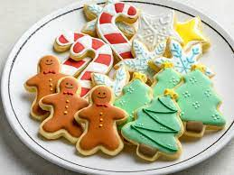

Christmas cookies

Description
Modern Christmas cookies can trace their history to recipes from Medieval Europe biscuits, when many modern ingredients such as cinnamon, ginger, black pepper, almonds and dried fruit were introduced into the west. By the 16th century Christmas biscuits had become popular across Europe, with Lebkuchen being favoured in Germany and pepparkakor in Sweden, while in Norway krumkake were popular.
Ingredients
- 1 1/2 cups salted butter, softened
- 1 cup white sugar
- 1 teaspoon baking powder
- 1/4 teaspoon salt
- 1 large egg
- 1 teaspoon vanilla extract
- 1/4 teaspoon almond extract
- 3 1/2 cups all-purpose flour
- 2 tablespoons colored sugar
- powdered sugar icing (optional)
Steps
- Gather all ingredients and preheat the oven to 375 degrees F (190 degrees C).
- Beat butter with an electric mixer in a large bowl for 30 seconds.
- Add sugar, baking powder, and salt. Beat until combined, scraping sides of bowl occasionally. Beat in egg, vanilla, and almond extract until combined.
- Beat in as much of the flour as you can using the mixer. Stir in any remaining flour with a wooden spoon
- Force room-temperature dough through a cookie press onto ungreased cookie sheets. If desired, sprinkle cookies with colored sugar or nonpareils.
- Bake in the preheated oven until edges are firm but not brown, 6 to 8 minutes. Transfer to wire racks to cool completely.
- For powdered sugar icing, combine powdered sugar, milk, and vanilla in a small bowl. If necessary, add more milk, 1 teaspoon at a time, to make icing drizzling consistency.
- If desired, drizzle cooled cookies with powdered sugar icing and decorate with sprinkles.